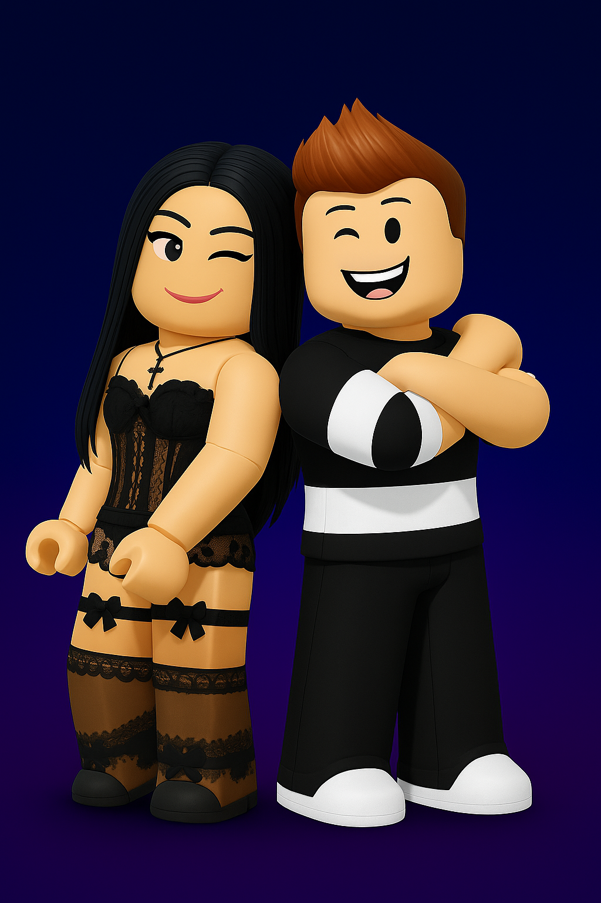

¡Bienvenid@ a la edición más emocionante del universo musical de Roblox!
Las fases del casting están a punto de comenzar y tú podrías ser una de las voces que ilumine nuestras galas. ¡Sólo necesitas dar el primer paso!
| Fase | Fecha | Hora | Detalles |
|---|---|---|---|
| Fase 1 – Primer Casting | 1 de julio | 17:00 | Canta 2 temas de la playlist oficial |
| Fase 2 – Finalistas | 3 de julio | 17:00 | Elige 1 canción libre y brilla |
| Selección de Jurado y Staff | 3 de julio | 17:00 | Audiciones para ser parte del equipo |
Todas las audiciones y galas serán emitidas EN DIRECTO por nuestro canal de YouTube.
Carmen y Germán son los organizadores oficiales de OTROBLOX 2025.
Prepara tus actuaciones con nuestra lista de canciones especialmente seleccionadas para esta edición.
▶️ Ver Playlist en YouTube¡Queremos conocerte! Rellena esta encuesta antes del día del casting.
📝 Completar EncuestaSíguenos en nuestras plataformas para estar al día con las novedades, ensayos, directos y resultados.
Instagram TikTok Discord (anuncios y enlace del juego) YouTube¿Tienes alguna duda o necesitas ayuda? Escríbenos a:
contacto@otroblox.com